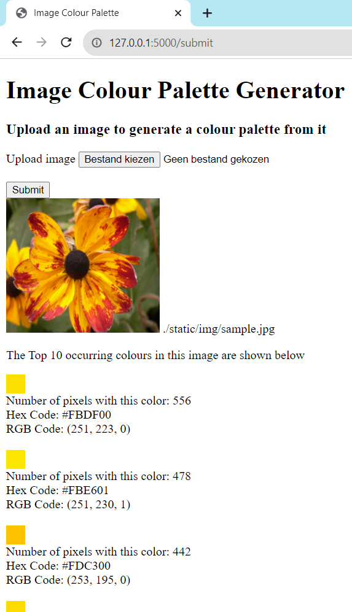

My portfolio.
Image Color Palette Generator


This web application lets you find the most common colors in an uploaded image.

The following techniques were used:

A visual impression:
© 2023 Marc Bruyland.